Cómo verificar la transparencia del Token ASM
🔥 En el mundo de las criptomonedas existen grandes oportunidades, pero también riesgos que todo inversor debería conocer.
Por eso, antes de participar en cualquier proyecto, es importante aprender a verificar información clave de forma independiente.
En esta guía veremos cómo comprobar algunos de los aspectos más importantes relacionados con la seguridad y transparencia del token ASM:
✅ Contrato renunciado (Ownership Renounced)
✅ Liquidez quemada (Liquidity Burned)
✅ Auditorías de seguridad
✅ Información pública disponible en BSCScan y DexScreener
El objetivo no es pedir confianza ciega, sino mostrar cómo cualquier persona puede verificar por sí misma la información registrada en la blockchain.
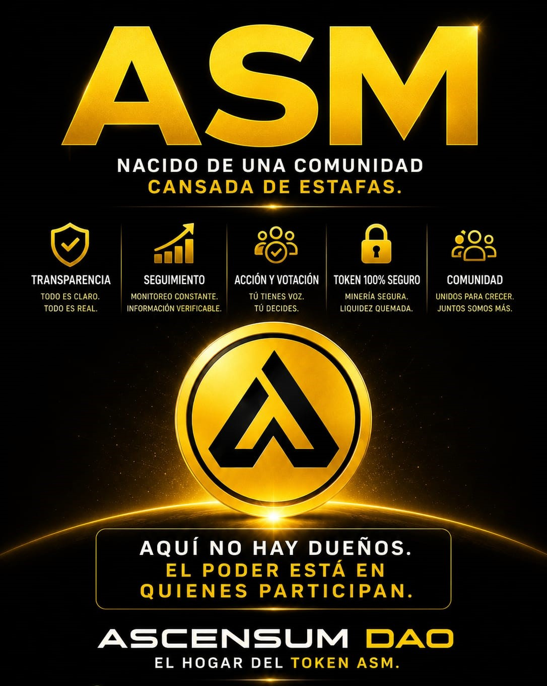
¿Qué significa que el contrato fue renunciado?
Cuando se crea un token, el desarrollador suele tener permisos administrativos especiales dentro del contrato inteligente.
Dependiendo de cómo haya sido programado el contrato, esos permisos podrían permitir acciones como:
✔ Modificar determinadas configuraciones
✔ Cambiar parámetros internos
✔ Actualizar direcciones del sistema
✔ Alterar ciertas funciones administrativas
Cuando un contrato es renunciado (Ownership Renounced), el propietario elimina voluntariamente esos privilegios administrativos.
En términos simples:
✅ El creador deja de tener control sobre las funciones administrativas del contrato.
A partir de ese momento, el contrato queda funcionando de forma automática y permanente en la blockchain según las reglas establecidas en su programación original y dichas funciones ya no pueden ser modificadas por el desarrollador.
¿Por qué es importante?
Porque ayuda a reducir el riesgo de cambios unilaterales por parte del creador.
Para un inversor esto significa que:
✔ Las reglas del contrato no pueden modificarse posteriormente mediante privilegios administrativos.
✔ El desarrollador pierde el control directo sobre funciones críticas del contrato.
✔ El proyecto gana transparencia y descentralización.
Eso genera más confianza.
Por este motivo, el estado "Ownership Renounced" es considerado una señal positiva dentro del ecosistema cripto.
¿Qué significa que la liquidez fue quemada?
La liquidez es la que permite que los usuarios puedan comprar, vender e intercambiar un token dentro del mercado.
Sin liquidez, un token prácticamente no puede operar.
El riesgo en algunos proyectos
En ciertos proyectos, los desarrolladores conservan el control sobre la liquidez.
Si esa liquidez es retirada repentinamente, los inversores pueden encontrarse con grandes dificultades para vender sus tokens.
A esta práctica se la conoce comúnmente como "Rug Pull".
¿Qué ocurre cuando la liquidez es quemada?
Cuando la liquidez es quemada (Liquidity Burned), los tokens LP (Liquidity Provider) son enviados a una dirección irrecuperable conocida como "dead wallet".
Esto implica que:
✅ La liquidez no puede ser retirada.
✅ El desarrollador pierde acceso a ella.
✅ Permanece bloqueada de forma permanente en la blockchain.
¿Por qué es relevante?
Porque elimina la posibilidad de que el creador retire posteriormente esa liquidez.
Para muchos inversores, la liquidez quemada representa una importante señal de compromiso a largo plazo y transparencia operativa.
🔹 La blockchain permite verificar gran parte de la información públicamente.
En lugar de basar una decisión únicamente en opiniones o promesas, cualquier persona puede consultar contratos, auditorías, liquidez y transacciones directamente en los exploradores blockchain.
La educación y la verificación independiente son algunas de las mejores herramientas que tiene un inversor para reducir riesgos y tomar decisiones informadas.

Estás a una decisión de cambiar tu posición en el mundo cripto
¿Estás listo para dar el siguiente paso?
Haz click abajo y asegura tu Nodo ahora.
🔹 Cómo Auditar el Token ASM en DexScreener
Una de las ventajas de la tecnología blockchain es que gran parte de la información de un proyecto puede verificarse públicamente.
No es necesario confiar únicamente en lo que dice un equipo o una comunidad.
Cualquier persona puede consultar los datos directamente en herramientas especializadas como DexScreener.
Contrato del Token ASM
Este es el contrato oficial del token ASM:
También puedes acceder directamente a su información pública desde DexScreener:
Acceder a Dexscreener
Evolución del Precio
Al ingresar a DexScreener, lo primero que encontrarás es el gráfico de evolución del token.
Este gráfico muestra cómo se ha comportado el precio desde el día de su lanzamiento y permite observar visualmente su crecimiento, estabilidad o posibles correcciones a lo largo del tiempo.
ASM fue lanzado el 7 de marzo de 2026 con un precio inicial de 3,19 USDT.
En la siguiente imagen puedes observar la evolución histórica del token desde su lanzamiento.
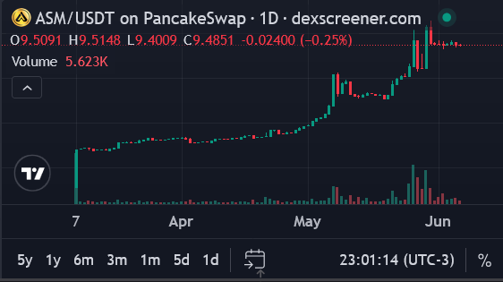
Precio y Liquidez
Además del gráfico, DexScreener muestra información importante sobre el estado actual del token.
En el recuadro resaltado podrás identificar:
✔ Precio actual del token.
✔ Liquidez disponible.
Por ejemplo:
Precio: 9,53 USDT
Liquidez: 749.000 USDT
¿Qué significa la Liquidez?
La liquidez representa los fondos disponibles que permiten que las personas puedan comprar y vender el token en cualquier momento.
En términos simples, cuanto mayor sea la liquidez, más facilidad existe para realizar operaciones dentro del mercado.
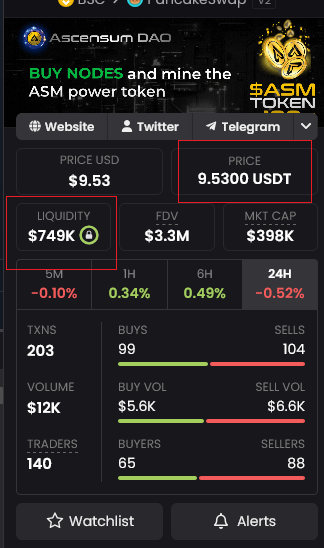
Verificando si la Liquidez está Protegida
Junto al valor de la liquidez encontrarás un pequeño icono con forma de candado.
Al hacer clic sobre él, DexScreener mostrará información adicional sobre el estado de la liquidez.
En el caso de ASM, la información indica:
✅ Liquidez 100% Bloqueada.
✅ Liquidez 100% Quemada.
Esto significa que los tokens LP asociados a esa liquidez fueron enviados a una dirección irrecuperable y ya no pueden ser utilizados para retirar los fondos.
En otras palabras, la liquidez quedó permanentemente bloqueada dentro del ecosistema.
¿Por qué es importante?
Cuando la liquidez permanece bloqueada y quemada, el desarrollador no puede retirarla posteriormente.
Esto elimina uno de los riesgos más conocidos dentro del mercado cripto, conocido como Rug Pull, donde un proyecto retira la liquidez y deja a los inversores sin posibilidad de operar normalmente.
Por este motivo, una liquidez bloqueada y quemada es una condición de alta seguridad y suele considerarse una señal positiva de transparencia y compromiso a largo plazo.
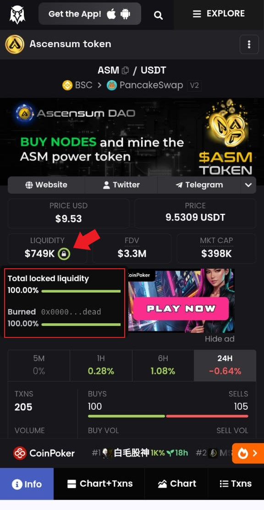
Verificando las Auditorías del Token
Si continuamos bajando dentro de DexScreener, encontraremos una sección muy importante: las auditorías automáticas realizadas por diferentes plataformas especializadas en seguridad blockchain.
Entre ellas se encuentran:
✔ Go+ Security
✔ Quick Intel
✔ Token Sniffer
Estas herramientas analizan el contrato inteligente y buscan características que podrían representar riesgos para los inversores.
En el caso de ASM, los resultados aparecen en color verde, indicando que no se detectaron riesgos críticos conocidos durante el análisis.
Si haces click sobre cualquiera de estas auditorías, podrás acceder al informe detallado y verificar la información por tu cuenta.
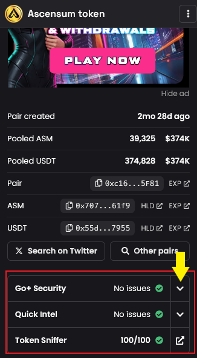
Ejemplo de Auditoría con Go+ Security
Al abrir el informe de Go+ Security podrás observar numerosos indicadores relacionados con la seguridad y el funcionamiento del contrato.
Por ejemplo:
✅ No existen comisiones ocultas de compra o venta (Fees).
✅ El contrato fue renunciado (Ownership Renounced).
✅ El creador ya no posee privilegios administrativos sobre el contrato.
Además de estos puntos principales, la auditoría muestra otros indicadores técnicos que ayudan a comprender mejor cómo funciona el token.
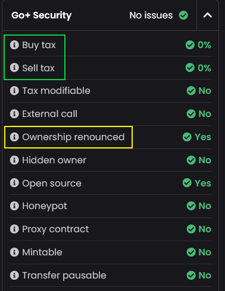
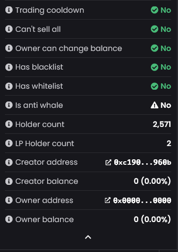
¿Qué significan estos indicadores?
Estas verificaciones aportan información importante para evaluar la transparencia y las características técnicas del contrato.
Tax Modifiable: No
Significa que el desarrollador no puede modificar posteriormente los impuestos o comisiones del token.
Hidden Owner: No
Indica que no existe un propietario oculto con privilegios especiales dentro del contrato.
Open Source: Yes
El código del contrato es público y puede ser revisado por cualquier persona.
Esto aporta transparencia porque permite que desarrolladores y auditores analicen su funcionamiento.
Honeypot: No
Un Honeypot es una estafa donde los usuarios pueden comprar un token pero luego no pueden venderlo.
La auditoría indica que ASM no presenta ese comportamiento.
Mintable: No
Significa que el contrato no puede crear nuevas monedas de forma arbitraria.
La cantidad de tokens está controlada por las reglas definidas en el proyecto, solo se puede minar un token nuevo con la compra de un nodo.
Transfer Pausable: No
Indica que nadie puede pausar o bloquear las transferencias entre usuarios.
Owner Can Change Balance: No
El propietario no puede modificar manualmente los saldos de los usuarios.
Has Blacklist: No
No existe una función para bloquear direcciones específicas e impedirles operar.
Has Whitelist: No
No existe una lista privada de usuarios con privilegios especiales para operar.
Creator Balance: 0%
La billetera creadora no posee tokens ASM.
Owner Address: 0x000...0000
Esta dirección es conocida como la dirección nula o "dead address".
Su presencia es una de las señales utilizadas para verificar que el contrato fue efectivamente renunciado.
Estás a una decisión de cambiar tu posición en el mundo cripto
¿Estás listo para dar el siguiente paso?
Haz click abajo y asegura tu Nodo ahora.
🔹 Cómo Verificar Ascensum en la Blockchain
Toda la actividad de Ascensum puede comprobarse públicamente en la blockchain de Binance Smart Chain. Cualquier persona puede verificar la información de forma transparente e independiente.
Contrato Oficial de Ascensum DAO
0x75f16b49403712b17f7072baea7ab725f89f5644Verificación Manual
1. Ingresa a BscScan.2. Copia el contrato de Ascensum DAO.
3. Pégalo en el buscador y presiona Enter.
4. Podrás consultar la información pública del contrato directamente en la blockchain.
Imagen 1

Acceso Directo
Si prefieres ahorrar tiempo, puedes utilizar los siguientes accesos directos:
📄 Consulta la información pública del contrato oficial.
🔍 Observa una transacción registrada directamente en la blockchain (imagen 4).
🔹 ¿Qué hace el Contrato de Ascensum?
Al analizar el contrato en BscScan podremos observar que no funciona como una billetera que acumula fondos.
Su función principal es ejecutar automáticamente las reglas programadas del ecosistema.
Cada vez que se vende un nodo, el contrato recibe los fondos y los distribuye según las proporciones establecidas en su programación.
Todas estas operaciones quedan registradas públicamente en la blockchain y pueden ser verificadas por cualquier persona.
Imagen 2

3.- Para comprobar a que billeteras envia el dinero bajamos hasta la seccion Transactions
Ahi veremos todas las operaciones de compra de nodos que se hacen minuto a minuto.
Todo lo que dice Buy_node es una operacion por compra de Nodo
Para comprobar cuales son esas operaciones y adonde envia el dinero el contrato, da click en cualquier Hash que tienes a la izquierda de Buy_node (flecha verde)
Para este tutorial tomaremos como ejemplo el primero.
Pero puedes abrir cualquier Hash, todos te daran la informacion de como opero el contrato de ascensum en cada operacion de compra de nodo.
Imagen 3
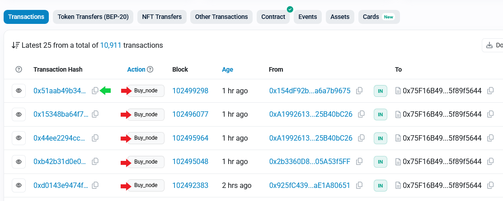
4.- Al abrir el hash veras que el contrato realiza varias operaciones tras la venta de un nodo.
En la imagen vemos que la billetera 0x154dF92b.....a6a7b9675 (flecha verde) interactuo con el contrato de Ascensum 0x75F16B49403712b17f7072BAEa7ab725f89f5644 (flecha roja)
La operacion fue la compra de un nodo de 25 usdt.
Esto puedes verificarlo en la primer operacion dentro del rectangulo rojo.
En la segunda operacion vemos que el contrato mino los 5 ASM que le corresponden a esa persona por haber comprado un nodo de 25 usdt.
Esos 5 tokens se los va a entregar dia a dia de forma proporcional a lo largo de 360 dias.
En la tercera operacion puedes ver que el contrato tomo el 20% de la compra del nodo (5 usdt) para interactuar con Pancakeswap comprando ASM
La cuarta operacion indica que Pancakeswap envia 0.5317 ASM a la billetera del contrato
En la ultima operacion de la imagen, vemos que el contrato quema esos 0.5317 token ASM enviandolos a la billetera de muerte (quema) 0x000000000000000000000000000000000000dEaD
Esto confirma que con el 20% de la compra de un nodo se compraron tokens ASM en Pancakeswap y se quemaron.
Imagen 4
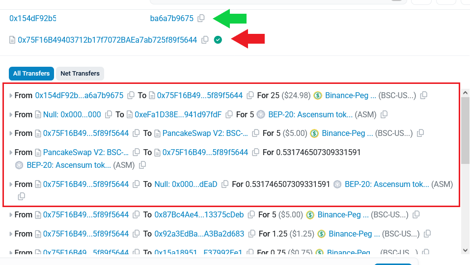
En la siguiente imagen vemos que el contrato toma el 20% (en este caso 5.00 usdt) de la venta de cada nodo y lo envia a la billetera del tesoro 0x87Bc4Ae48CDae1127ccF8694F245FF013375cDeb
Si das click en la direccion que terminada en cDeb te va a llevar a la direccion de fondos del tesoro para que puedas verificar el balance.
En la segunda operacion vemos que el contrato de Ascensum envia el 5% (en este caso 1.25 usdt) del valor de cada nodo que se vende, a la billetera 0x92a3EdBa7d5D151C89F807bAbf93d25A3Ba2d683
Esta es la billetera del robot de estabilizacion
Si das click en la direccion de la billetera te va a llevar a la direccion de fondos del robot para que puedas verificar el balance.
En la tercer operacion el contrato envia el 3% (en este caso 0.75 usdt) de cada nodo a la billetera de Desarrollo de Ascensum
En la ultima operacion el contrato envia el 2% (en este caso 0.50 usdt) de cada nodo y corresponde a Marketing de Ascensum
Lo que se destina para desarrollo y marketing es el 5% de cada nodo, es lo que permite continuar ampliando el Ecosistema.
Imagen 5
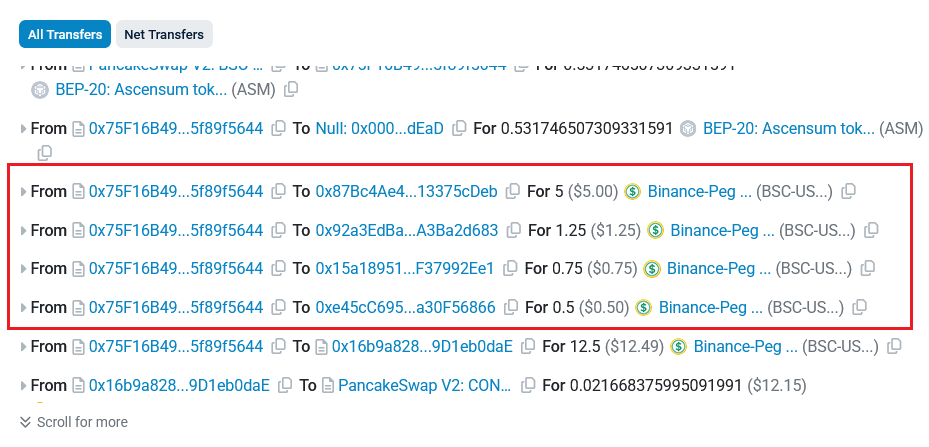
Distribución para el Vendedor
Por último, podemos observar cómo el contrato utiliza el 50% del valor del nodo para comprar automáticamente tokens CONCILIUM mediante PancakeSwap.
En este ejemplo:
✅ El contrato tomó 12,50 USDT (50% del valor del nodo).
✅ Ejecutó una compra automática en PancakeSwap.
✅ Obtuvo 39,3867 tokens CONCILIUM.
✅ Envió esos tokens directamente a la billetera del vendedor.
Aunque durante el proceso aparecen varias operaciones internas propias del intercambio descentralizado, el resultado final puede verificarse fácilmente en la blockchain: el contrato utiliza el 50% del valor del nodo para adquirir CONCILIUM y los transfiere a la siguiente billetera 0x3BBB0038....67796cC9b que pertenece a la persona que vendio ese Nodo.
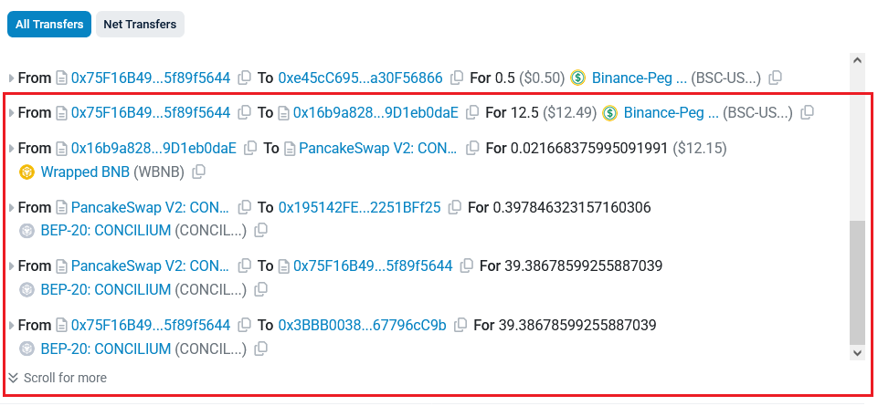
Para finalizar has podido comprobar que el contrato inteligente de Ascensum cumplio con cada una de las tareas programadas.
Tomo el 100% del valor de un nodo y repartio absolutamente todo de la siguiente manera:
Te he entregado un conocimiento que sirve para cualquier proyecto
Aunque en esta guía utilizamos ASM y Ascensum como ejemplos prácticos, los conceptos y herramientas que acabas de aprender pueden utilizarse para analizar cualquier proyecto desarrollado sobre blockchain.
Aprender a consultar contratos, auditorías, liquidez y transacciones públicas permite tomar decisiones más informadas y reducir muchos de los riesgos habituales del ecosistema cripto.
El objetivo de esta guía es enseñar a que cualquier persona pueda verificar por sí misma la información registrada en la blockchain.
🔹 Conclusión 🔹
“No pedimos confianza ciega
Te enseñamos a verificar”
Estás a una decisión de cambiar tu posición en el mundo cripto
¿Estás listo para dar el siguiente paso?
Haz click abajo y asegura tu Nodo ahora.
Ascensum DAO
Explora la Seguridad y todo su Potencial
En este video descubrirás qué hace diferente a Ascensum DAO y por qué está despertando el interés de muchas personas dentro del mundo cripto.
Analizaremos su seguridad, su modelo de funcionamiento, sus ventajas y los fundamentos que podrían impulsar su crecimiento transformando ASM en la moneda viral del 2026
Si alguna vez te preguntaste qué es ASM y por qué no se parece a la mayoría de las criptomonedas del mercado, aquí encontrarás las respuestas.
Infórmate, verifica los datos por ti mismo y descubre el potencial que muchos ven en este proyecto.